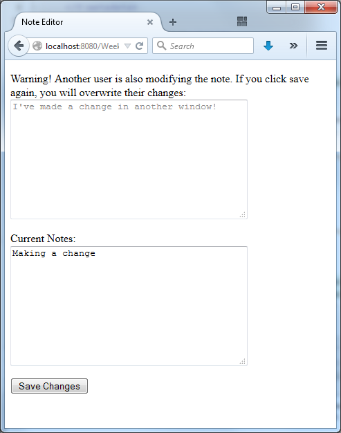

In the practical activities for this week, you used JDBC with pessimistic concurrency control.
When you are using JPA, you can use pessimistic concurrency control.
However, with JPA it is more common to make use of optimistic concurrency control using @Version.
For this challenge, you should create a simple application that lets users edit a notes field. If two users modify the notes at the same time, then this should be detected when they attempt to save the changes.
For example, the user might see something like this when they visit the application:
Then, suppose they make some changes (but haven't yet clicked "Save Changes"):
Suppose that, at the same time, another user working in another window has changed and saved the notes (to "I've made a change in another window"). Then, when the current user clicks "Save Changes", they should see a warning:

If there aren't any concurrent modifications, then the changes should just be saved directly when the user clicks "Save Changes".
Challenge: Can you build an application that does this?
Hints
Create an @Entity for storing your notes and ensure there is an @Version field/property.
In this challenge problem, we have just one notes field so a primary key doesn't make sense. However, JPA requires a primary key. You could create a primary key field/property but only show/edit the Entity with id = 1 (i.e., your table has just one row). Alternatively, you could have multiple notes in your application, and allow users to choose which note they are editing.
If there is a concurrent modification, then the version field/property in the database and the application will be mismatched.
This mismatch will be detected if you merge and then flush an updated record with an incorrect version.
If your backing bean is request scoped, then you may need to store your version information in a hidden field.